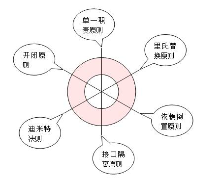

Learning Notes
主页
面试知识
面试要点-操作系统篇
面试要点-计算机网络篇
数据结构和算法
算法-复杂度分析
算法-排序-总结
算法-排序-简单排序
算法-排序-归并排序
算法-排序-Shell排序
算法-排序-快速排序
算法-排序-基数排序
算法-排序-堆排序
算法-递归算法
数据结构-栈和队列
数据结构-链表
数据结构-树-二叉树
数据结构-树-红黑树
数据结构-树-多叉树
数据结构-散列
数据结构-堆(Heap)
数据结构-图(Graph)
数据结构-图-搜索
数据结构-图-应用
知识笔记
知识笔记-操作系统-基础概念
知识笔记-计算机网络-基础概念
知识笔记-组成原理-基础概念
知识笔记-系统结构-基础概念
知识笔记-软件工程-基础概念
知识笔记-计算机基础-常用概念
编程语言
Java程序设计-容器类库
Java程序设计-关键字this和super
Java程序设计-多线程基础
Java程序设计-jdbc的使用.md
编程语言-C++常用基础概念
编程语言-C++性能优化指南
编程语言-Python编程基础
未分类
OOP-六条设计原则
OOP 六大设计原则
设计模式
Learning Notes
Docs
»
未分类 »
OOP-六条设计原则
Edit on GitHub
OOP 六大设计原则

用抽象构建框架，用实现扩展细节：
单一职责原则告诉我们实现类要职责单一；
里氏替换原则告诉我们不要破坏继承体系；
依赖倒置原则告诉我们要面向接口编程；
接口隔离原则告诉我们在设计接口的时候要精简单一；
迪米特法则告诉我们要降低耦合。
开闭原则是总纲，他告诉我们要对扩展开放，对修改关闭。
GitHub
« Previous
Next »